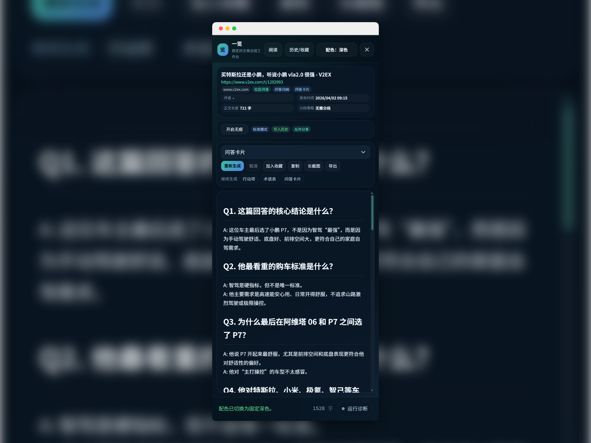
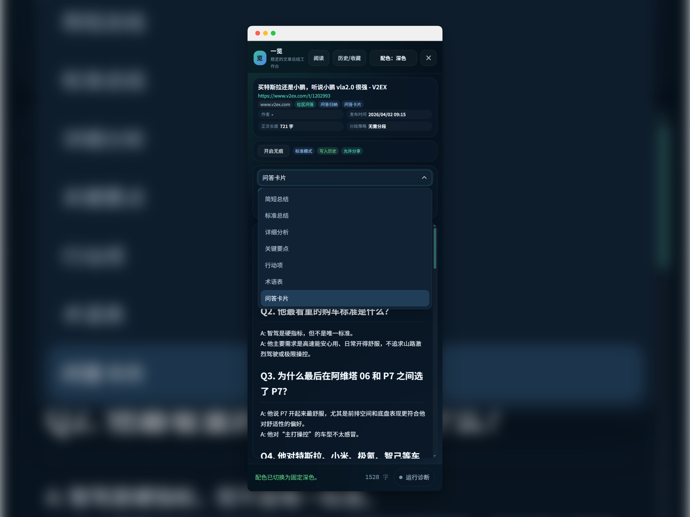
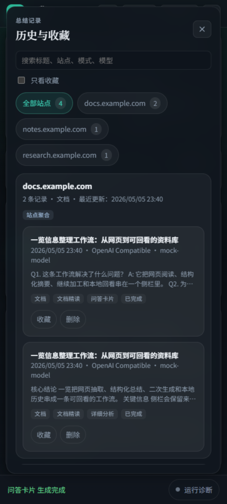
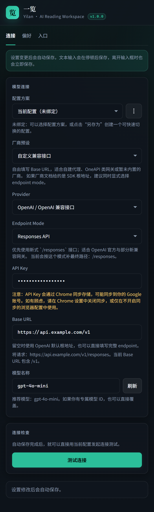

自动理解网页上下文
提取正文、标题、作者、发布时间和站点信息，并根据页面类型调整处理策略。
一览把网页抽取、结构化总结、二次生成、历史沉淀和专注阅读串成一条工作流。 快速读懂，也能把每次处理结果留在本地，方便检索、收藏和回顾。

没有强绑定账号体系，适合先用起来。
不止生成一次结果，而是形成可复用流程。
支持独立阅读页、导出和长截图分享卡。
提取正文、标题、作者、发布时间和站点信息，并根据页面类型调整处理策略。
简短总结、标准总结、详细分析、关键要点，以及行动项、术语表、问答卡片。
处理结果可落到本地历史，支持搜索、按站点筛选、收藏与回看。
支持独立阅读页、Markdown 导出，以及带来源链接的长截图分享卡。
右键页面或使用快捷键，直接把当前网页送进侧栏工作区。
根据页面内容生成摘要，也可以继续转成行动项、术语表或问答卡片。
把结果加入历史与收藏，或者切到专注阅读页进行整理、复制与导出。



打开任意网页后，右键选择“用「一览」总结此页”，或者直接按 Alt + S。侧栏会打开，并按你的入口设置自动开始生成，或者等待你手动触发。
需要。“一览”采用 BYOK 模式，首次使用前要在设置页填入你自己的 API Key，并选择厂商预设、Provider 和 Endpoint Mode。保存后可以先点“测试连接”确认配置可用。
通常是因为开启了无痕模式，或者关闭了“默认写入历史”。在这两种情况下，结果只会停留在当前侧栏，不会进入本地历史，也不能加入收藏。
浏览器内部页面、扩展商店页面，或者其他受浏览器权限限制的页面，通常无法注入内容脚本。这不是“一览”侧栏本身的问题，而是浏览器的安全限制。